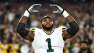
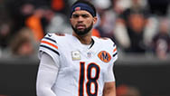
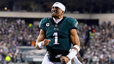

Football Stars
-

Micah Parsons
-

Caleb Williams
-

Jalen Hurts
All you need to know about Football!
American football developed in the late 19th century, evolving from rugby and soccer. The first organized college games took place in the 1860s–70s, with rule changes led by Walter Camp, known as the “Father of American Football.” Over time, the sport grew in popularity due to its strategy, physicality, and team coordination. In 1920, the NFL was created, transforming football into one of the most watched and celebrated sports in the United States. Today, football is known for its explosive plays, tactical depth, and passionate fan culture across all levels—from youth leagues to the Super Bowl.
Football Rules: